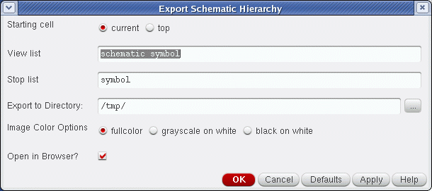
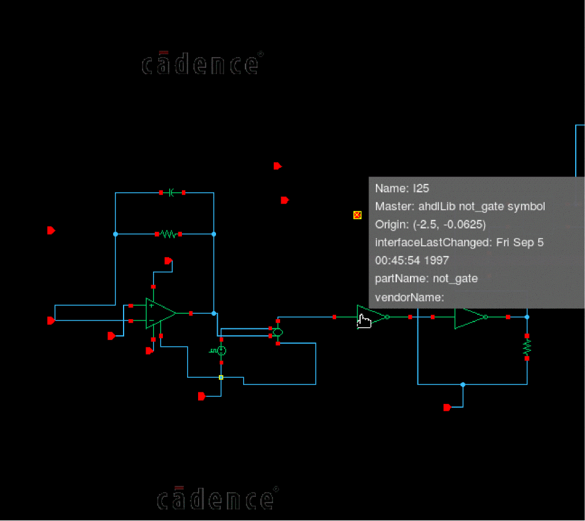

19
Exporting a Schematic Hierarchy to HTML
Schematic HTML Publisher Overview
You can export a schematic design hierarchy to HTML by selecting File – Export HTML from Virtuoso Schematic Editor XL.
The schematic design hierarchy is published in a format that can be rendered and displayed in a web browser. Once in HTML, various aspects of the design can then be traversed and navigated as part of a multi-frame display format.
Use Scenarios
The anticipated scenarios, and use models, where it is expected that benefits will arise from the ability to export a schematic hierarchy to HTML include the following:
- Design review situations where access to a company’s intranet is not possible, but schematic hierarchy information is still required to be accessed and analyzed.
- Design leads who may be working offline, without access to Virtuoso, but can still require to review schematic hierarchy structures and details.
- Design publishing situations where elements of design collateral can be exported and distributed to customers who may not, for example, have access to Virtuoso.
Supported Browsers
Cadence recommends the use of Mozilla Firefox or Google Chrome for best results using the HTML schematic hierarchy export facility. However, performance on both Opera and Safari is considered good, while Internet Explorer (unsupported) works with limited functionality.
--allow-file-access-from-files option when launching Chrome.exe on a file. This option is not needed when accessing the HTML report via HTTP.chrome.exe --allow-file-access-from-files <local path>\temp\temp\index.html
Exporting a Design Hierarchy to HTML (non-configured schematic)
To export your schematic design hierarchy to HTML:
- In Virtuoso Schematic Editor XL, open the design with the hierarchy you want to export to HTML.
-
Select File – Export HTML.
The Export Schematic Hierarchy form is displayed.
 - Specify your design export options.
-
Click the OK button to commence the schematic design hierarchy export process.
A progress bar will be displayed in the status bar, giving step-by-step export updates.
On completion, the exported schematic design will be displayed in your browser (see Navigating Exported HTML in a Web Browser).
Exporting a Design Hierarchy to HTML (configured schematic)
Exporting design hierarchy content in HTML format from a configured schematic largely follows the same process as doing so for a non-configured schematic.
However, in a configured schematic, you do not specify the Starting Cell, View List or Stop List options (as they are already specified within the configuration itself), in the Export Schematic Hierarchy form, rather you are required to select whether or not the Physical Config is to be used to perform hierarchy traversal. If you do not choose to use the physical configuration in this way, standard traversal, as performed by the Cadence Hierarchy Editor, will be used.
Navigating Exported HTML in a Web Browser
After exporting your design hierarchy to html your web browser will display your design information in a multi-framed format.
Figure 19-1 A Published Schematic Design in HTML Format in Mozilla Firefox
You can also view the property and attribute information in a tooltip when you move the mouse over an instance, an instance pin, or a pin.
- The tooltip of an instance displays the name, master library, origin, property names, and property values.
- The tooltip of an instance pin displays the name, instance name, and connected net name.
-
The tooltip of an instance pin displays the terminal name, direction, and pin master.

Additionally, as you scroll down the exported design hierarchy, there are further sections covering a Bill of Materials (which lists the non-leaf cells in the design hierarchy), and Master Details for the design, where there are separate images and sections for each non-leaf cell in the design.
The Dynamic Preview Pane
The Preview pane’s content is dynamically updated dependent upon the cursor position in the main frame. By default, when the cursor is not over an image, the top level cell will be displayed.
Additionally, if the cursor is positioned over a non-leaf symbol instance (in any relevant image in the main frame), and a corresponding sub-schematic exists for that instance, then the sub-schematic will be shown in the pane.
Figure 19-3 Sub-Schematic Shown in Preview Pane for Cursor-Highlighted Instance
Figure 19-4 Instance I3 Cursor-Highlighted in Navigator Pane and Reflected in the Preview Pane
The Navigator Pane
The Navigator pane can be used to explore the design hierarchy.
Initially displayed in a collapsed format, the Navigator pane can be expanded to display the design hierarchy in a tree view structure.
Figure 19-5 The Navigator Pane with the Top Cell Expanded
- Placing your cursor over any of the red-colored hyperlinks in the Navigator pane, will update the Preview pane to display the corresponding, underlying, object schematic (assuming that it is not a leaf-level object).
-
Clicking on any of the red-colored hyperlinks will jump to the corresponding object image in the Master Details section in the main frame (compare this action with a schematic descend operation) to quickly assist review and exploration.
Additional Navigation Within the Main Frame
You can further navigate the design hierarchy in the main frame by performing any of the following actions:
- Clicking on a (hyperlinked) instance.
- Clicking on an entry in the Table of Contents section.
- Clicking on an entry in the Bill of Materials section.
By performing any of the above actions, the main frame will adjust its content to display the corresponding object’s Master Details.
The Bill of Materials
The Bill of Materials section, in an exported design hierarchy, can be located by scrolling down through the main frame display, or by selecting the Bill of Materials hyperlink in the Table of Contents at the top of the page.
The purpose of the Bill of Materials is to list any non-leaf cells used in a design, in tabular format.
Figure 19-6 The Bill of Materials Table
- The table is initially sorted to show all of those non-leaf cells (sorted by the secondary order of an increasing number of instances count) which belong in the same library as the top level design. This display order is then followed by all remaining non-leaf cells listed by increasing order of instance count.
- Clicking on a table header (for example, Library or Cell) will sort the table based on the table header criteria, in either ascending or descending order.
- Selecting a link hyperlink will jump to that lib/cell/view in the Master Details section.
- Hovering your cursor over a preview option will display a (ToolTip) thumbnail image of the corresponding object.
Printing an Exported Design
To print exported design data:
- Select the Printer Friendly Version option at the top of the main frame.
-
Select Print this Frame.
The Print window will be displayed. -
Select Print.
The printed document will include the main frame contents along with the fully expanded contents of the Navigator pane; appended to the bottom of the printed document.
Customizing the HTML Files
The exported HTML pages are formatted using a set of predefined formatting instructions contained in a set of .xsl and .css files that are exported along with the schematic design hierarchy data. The design hierarchy data is in the XML format. The web browser uses these formatting instructions to create the HTML frames and pages and renders the design hierarchy data in the HTML format.
By default, to render the design data in the HTML format, Schematic Editor uses the .xsl and .css files provided at the following default location:
<CDS_INST_DIR>/share/cdssetup/dfII/publisher/html/
where, <CDS_INST_DIR> is the directory in which Virtuoso is installed.
If required, you can edit the .xsl and .css files to customize the formatting instructions contained in these files. For example, you can change the font type, add or remove contents displayed in the HTML files, or change the logo displayed with the design.
To customize the default format of the HTML files:
-
Create the
/dfII/publisherdirectory structure in the.cadencedirectory in your UNIX home.mkdirhier ~/.cadence/dfII/publisher
-
Copy the default
htmldirectory to the directory that you created in Step 1.cp -r <CDS_INST_DIR>/share/cdssetup/dfII/publisher/html ~/.cadence/dfII/publisher
The copied files include the default.xsland.cssfiles. -
Edit the formatting instructions contained in the .xsl and .css files that you copied to the
~/.cadence/dfII/publisher/htmldirectory.
When you next export a design hierarchy to HTML, the .xsl and .css files from the .cadence directory in your UNIX home are used instead of the files from the default location.
.html, .xsl, or image files in the .xml or .css files. For this, use the CDS_EXPORT_CUSTOM_FILES shell environment variable to specify a space-separated list of paths to these files. The files specified with this variable are exported along with the schematic design hierarchy.Return to top